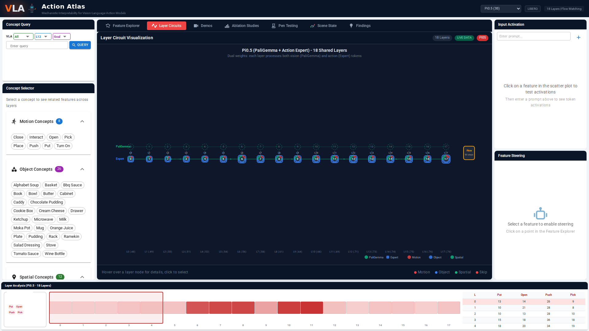

Action Atlas
Interactive visualization platform for VLA interpretability, inspired by Neuronpedia
Explore VLA Representations
Feature Explorer
UMAP scatter plots of 4,096+ SAE features with semantic search via SBERT embeddings
Layer Wires
Architecture diagrams showing information flow and concept density across transformer layers
Video Library
308,000+ rollout videos filterable by model, suite, experiment type, and outcome
Ablation Studies
Side-by-side baseline vs. ablated behavior with success comparison
Perturbation Testing
Vision perturbation results across models with displacement analysis and cross-embodiment data
Launch Action Atlas
action-atlas.com

Feature Explorer

Layer Circuits

Ablation Studies

Demo Videos